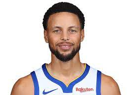

 Wardell Stephen Curry II (/ˈstɛfən/ STEF-ən; born March 14, 1988)[1] is an American professional basketball player and point guard for the Golden State Warriors of the National Basketball Association (NBA). Widely regarded as the greatest shooter and one of the greatest players of all time, Curry is credited with revolutionizing the sport by inspiring teams and players to take more three-point shots.[2][3][4][5] He is a four-time NBA champion, a two-time NBA Most Valuable Player (MVP), an NBA Finals MVP, an NBA All-Star Game MVP, and was named the inaugural NBA Western Conference Finals MVP. He is also a ten-time NBA All-Star, a nine-time All-NBA selection (including four on the First Team), and has won two gold medals at the FIBA World Cup as a member of the U.S. men's national team.
Golden State Worriors
Number 30
Best shooter